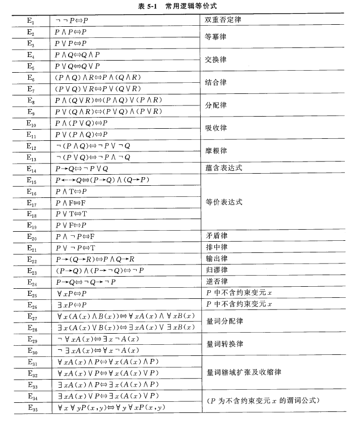
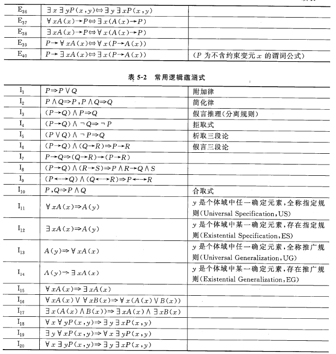
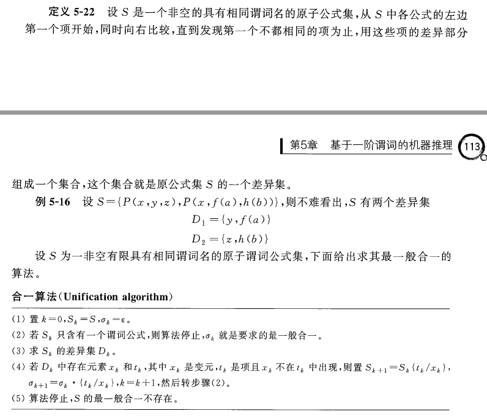

4 推理技术
4.1 谓词逻辑表示法
命题：一个陈述句称为一个断言，凡是有真假意义的断言称为命题
谓词：带有参数的命题就是谓词。表达式\(P(t_1,t_2,\cdots,t_n)\)称为\(n\)元谓词，简称谓词，其中\(P\)为谓词名/谓词符号/谓词，\(t_i\)为谓词的项。
个体变元 & 个体常元：可以代表具体事务的符号或数值称为个体常元，可以取不同的值的变元称为个体变元
- 个体域：个体变元的取值范围
- 全总个体域：包揽一切事物的集合
函数：为了表达个体之间的对应关系，可采用\(f(x_1,x_2,\cdots,x_n)\)的形式
- 函数与谓词的区别：
- 谓词的真值是真假，函数没有真值
- 谓词实现的是从个体域到真假的映射，函数实现的是从个体域到个体域的映射
- 谓词逻辑中函数不能单独使用，必须嵌入到谓词中
连接词：
- \(\neg\)：非/否定
- \(\lor\)：或/析取
- \(\land\)：和/合取
- \(\rightarrow\)：条件/蕴含
- \(\leftrightarrow\)：双条件/当且仅当
量词：由量词符号和被其量化的变元所组成的表达式，用来对谓词中的个体做出量的规定
- 全称量词：所有x，任意x
- 存在量词：至少有一个x，存在x
- 辖域：紧接于量词之后被量词作用的命题函数式称为量词的辖域
- 指导变元：量词后的变元
- 约束变元：在一个量词的辖域中与该量词的指导变元相同的变元
- 自由变元：...其他变元
项：
- 个体常元和个体变元是项
- 设\(f\)为n原函数符号，若\(t_1,t_2,\cdots\)为项，则\(f(t_1,t_2,\cdots)\)也为项
- 只有有限次使用上述两条得到的才是项
原子公式：设\(P\)为n元谓词符号，\(t_1,t_2,\cdots\)为项，则\(P(t_1,t_2,\cdots)\)为原子谓词公式，也称为原子公式/原子
谓词公式（合式公式）：
- 原子公式是谓词公式
- 若P和Q是谓词公式，则使用\(\neg P\)、\(P\lor Q\)、\(P\land Q\)、\(P\leftrightarrow Q\)、\(P\rightarrow Q\)、\(\forall x \ P\)、\(\exists x \ P\)也是谓词公式
- 只有有限次使用前两步构成的公式是谓词公式
合取范式 & 析取范式：
- 合取范式：\(P_1\land P_2\land \cdots \land P_n\)，其中\(P_i\)形式为\(L_1\lor L_2 \lor \cdots \lor L_n\)，\(L_i\)为原子公式或其否定
- 析取范式：\(P_1\lor P_2\lor \cdots \lor P_n\)，其中\(P_i\)形式为\(L_1\land L_2 \land \cdots \land L_n\)，\(L_i\)为原子公式或其否定
- 应用逻辑等价式，任意谓词公式都可以化为合取范式或析取范式，且一般不唯一
解释：谓词公式G在个体域D中的一个解释I指：（1）对G中每个常元符号指定D中一个元素（2）对G中每个n元函数符号指定一个函数，即D'到D的映射（3）对每个n元谓词符号指定一个谓词，即D'到{T, F}的映射
逻辑等价 & 逻辑蕴含：G和H是两个谓词公式，D是公共个体域
- 逻辑等价：对于D中任意解释，G和H具有相同真值，则称在D上G和H逻辑等价。若在所有个体域上等价，则称G和H逻辑等价，记为\(G\iff H\)
- 逻辑蕴含：对于D中任意解释，G为真时H也为真，则称在D上G逻辑蕴含H。若在所有个体域上G逻辑蕴含H，则称G逻辑蕴含H，记为\(G\implies H\)
常用逻辑等价式和蕴含式：


永真式：P为谓词公式，D为个体域
- 对于D中任意解释
- 若P恒为真，则称P在D上永真/是D上的永真式
- 若P恒为假，则称P在D上永假/是D上的永假式
- 若至少有一个解释使P为真，则称P在D上可满足/是D上的可满足式
- 对于任何个体域
- 若P永真，则称P为永真式
- 若P永假，则称P为永假式
- 若P都可满足，则称P为可满足式
推理规则：G和H为两个谓词公式
- \(G\leftrightarrow H\)永真的充要条件为\(G\iff H\)
- \(G\rightarrow H\)永真的充要条件为\(G\implies H\)
谓词逻辑表示法：事实性知识用与或非等连接的谓词公式表示，规则用蕴含式表示
- 方法：
- 定义谓词：谓语做谓词、主语做个体
- 用连接词或量词把谓词公式连接起来，形成谓词公式
- 从外到里层层细化
- 优点：
- 逻辑谓词与关系数据库具有密切联系
- 缺点：
- 存在组合爆炸、推理效率低的问题
基于谓词公式的形式演绎推理：利用推理规则将基于自然语言的逻辑推理转化为基于谓词公式的符号变换，实现形式推理
4.2 归结演绎推理
文字 & 子句：
- 文字：原子谓词公式及其否定
- 互补文字：\(L\)与\(\neg L\)称为互补文字
- 子句：若干个文字的析取式称为一个子句
- r个问题组成的子句叫r-文字子句，1-文字子句称为单元子句
- 不含任何文字的子句称为空子句，记为NIL
子句集：给定谓词公式G，通过以下步骤获得G的子句集
- 消去蕴含和等价
- \(P\rightarrow Q\iff \neg P\lor Q\)
- \(P\leftrightarrow Q \iff (\neg P\lor Q)\land (\neg Q \lor P)\)
- 缩小否定词的作用范围，直到仅作用于原子公式
- \(\neg(\neg P)\iff P\)
- \(\neg(P\land Q)\iff \neg P\lor \neg Q\)
- \(\neg(P\lor Q)\iff \neg P\land \neg Q\)
- \(\neg \forall x P(x)\iff \exists x \neg P(x)\)
- \(\neg \exists x P(x)\iff \forall x \neg P(x)\)
- 适当改名，使量词间不含同名指导变元和约束变元
- 消去存在量词，同时进行变元替换
- 若存在量词在某些全称量词的辖域内，则用这些全称量词指导变元的一个函数代替存在量词辖域中相应约束变元（skolem函数）
- 若存在量词不在任何全称量词的辖域内，则用一个常量符号代替存在量词辖域中相应的约束变元（skolem常量）
- 化为前束形（量词左移），使得每个全称量词的辖域都是整个公式
- 化公式为合取范式
- \(P\lor (Q\land R)\iff (P\lor Q)\land (P\lor R)\)
- \((P\land Q)\lor R\iff (P\lor R)\land(Q\lor R)\)
- 消去全称量词
- 适当改名，使子句间无同名变元
- 消去合取符号，以子句为元素构成子句集
子句集的（不）可满足：
- 谓词公式G不可满足当且仅当子句集不可满足
- 子句集不可满足当且仅当其全部子句的合取式不可满足
替换：形如\(\{t_1/x_1,t_2/x_2,\cdots,t_n/x_n\}\)的有限集合，其中\(t_1,\cdots,t_n\)为项，称为替换的分子；\(x_1,\cdots,x_n\)是互不相同的个体变元，称为替换的分母；\(t_i\)不同于\(x_i\)，\(x_i\)也不循环地出现在\(t_j\)中；\(t_i/x_i\)表示用\(t_i\)替换\(x_i\)。
- 若\(t_1,t_2,\cdots,t_n\)都是不含变元的项，则替换称为基替换
- 没有元素的替换称为空替换
替换的复合/乘积：设\(\theta=\{t_1/x_1,t_2/x_2,/cdots,t_n/x_n\}\)，\(\lambda=\{u_1/y_1,u_2/y_2,\cdots,u_n/y_n\}\)为两个替换，则将集合\(\{t_1\lambda/x_1,t_2\lambda/x_2,\cdots,t_n\lambda/x_n,u_1/y_1,u_2/y_2,\cdots,u_n/y_n\}\)中符合下列条件的元素删除：\(\begin{cases}t_i\lambda/x_i & t_i\lambda=x_i\\ u_i/y_i & y_i\in\{x_1,\cdots,x_n\}\end{cases}\)，得到的集合仍然是一个替换，称为\(\theta\)与\(\lambda\)的复合/乘积，记为\(\theta\cdot\lambda\)
- 替换的乘积满足结合律
合一：设\(S=\{F_1,F_2,\cdots,F_n\}\)为原子公式集，若存在一个替换\(\theta\)使得\(F_1\theta=F_2\theta=\cdots=F_n\theta\)，则称\(\theta\)是\(S\)的一个合一，称\(S\)是可合一的
最一般合一：设\(\sigma\)是原子公式集\(S\)的一个合一，若对\(S\)的任意一个合一，都存在替换\(\lambda\)使得\(\theta=\sigma\cdot \lambda\)，则称\(\sigma\)为\(S\)的最一般合一

命题逻辑的归结原理：设\(C_1\)和\(C_2\)是命题逻辑中两个子句，\(C_1\)中有文字\(L_1\)，\(C_2\)中有文字\(L_2\)，且\(L_1\)与\(L_2\)互补。从\(C_1\)、\(C_2\)中分别删除\(L_1\)、\(L_2\)，再将剩余部分析取，记构成的新子句为\(C_{12}\)，则称\(C_{12}\)为\(C_1\)和\(C_2\)的归结式，\(C_1\)、\(C_2\)称为归结式的亲本子句，\(L_1\)、\(L_2\)称为消解基
- 归结式是其亲本子句的逻辑结果
- 若用\(C_{12}\)代替\(C_1\)和\(C_2\)得到新子句集\(S'\)，则\(S'\)不可满足\(\implies S\)不可满足
- 若将\(C_{12}\)加入\(S\)得到新子句集\(S'\)，则\(S'\)不可满足\(\iff S\)不可满足
谓词逻辑的归结原理：设\(C_1\)和\(C_2\)是两个无相同变元的子句，\(L_1\)和\(L_2\)分别为\(C_1\)和\(C_2\)中的两个文字。如果\(L_1\)和\(L_2\)有最一般合一\(\sigma\)，则子句\((C_1\sigma-\{L_1\sigma\})\cup (C_2\sigma-\{L_2\sigma\})\)称为\(C_1\)和\(C_2\)的二元归结式，\(C_1\)、\(C_2\)称为归结式的亲本子句，\(L_1\)、\(L_2\)称为消解基
- 归结式是其亲本子句的逻辑结果
- 如果子句集\(S\)是不可满足的，则必存在一个由\(S\)推出空子句的消解序列
应用归结原理进行证明：已知公式集\(S\)和目标公式\(L\)
- 否定\(L\)，得到\(\neg L\)
- 把\(\neg L\)添加到\(S\)中
- 把新产生的集合\(\{S,\neg L\}\)化为子句集
- 应用归结原理，力图推导出一个表示矛盾的空子句（若某一步推出了空子句，则推出了矛盾，即子句集是不可满足的，从而原否定式是不可满足的，进而说明原公式永真）
应用归结原理求取问题答案：
- 将已知条件用谓词公式表示，并化为相应的子句集\(S\)
- 把目标的否定用谓词公式表示，并化为子句集
- 构造目标否定子句的重言式，替换原子句（如果子句中包含互补的文字对，则该子句为永真/重言式）
- 将3得到的子句集应用归结原理求出反演树
- 用根子句作为回答语句，答案在此根子句中
归结过程的控制策略：
- 解决的问题：归结方法的知识爆炸
- 目的：归节点尽量少
- 原则：避免多余的、不必要的归结式出现
- 策略列举：
- 删除策略：纯文字删除法、永真式删除法、归类删除法
- 支持集策略
- 单文字子句策略
- 输入归结策略
- 线性归结策略
- 语义归结策略
Herbrand定理（海伯伦定理）：未完待续